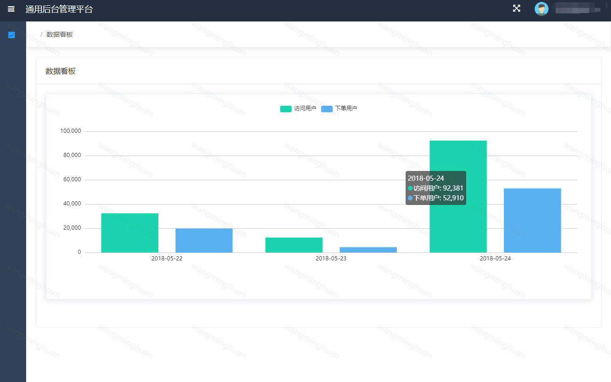

图片水印的几种实现方案
概述
图片水印相信大家都不陌生，在知乎、微博等地方可以经常看到。水印的作用可以基本就是为了给图片绑定身份信息，可以用来声明图片归属权，或发生信息泄露时便于定位到泄漏源。添加水印的方式有两种：后端水印和前端水印，二者各有优劣：后端水印的优势是安全，劣势是如果同一个文件在多个用户端都展示，那么就需要生成多份，无疑造成了资源浪费。前端水印不依赖服务端，完全依赖客户端的计算能力，减少服务端压力，同时可以做到千人千面，劣势是安全性较低。如何选择那就需要依据当前的使用场景。这里，对两端均做下介绍。
nodejs的实现
服务端的实现不同语言有不同的处理方式，但原理是相同的，这里我们就采用nodejs来实现，相关的图片处理库选用jimp，不像gm/node-images依赖系统库，node-gyp的安装总是出各种诡异的问题。jimp是完全用nodejs实现的，缺点是不支持gif图片的处理，不过可以使用gifwrap来补充处理，本文我们不讨论gif的处理，只处理静态图片。
简单水印
先实现一个简单的水印，给图片右下角添加一个水印logo
const Jimp = require('jimp');
// 需要添加的水印图片路径
const ORIGINAL_IMAGE = './img/1.png';
// 水印logo路径
const LOGO = './img/logo.png';
// 水印距离右下角百分比
const LOGO_MARGIN_PERCENTAGE = 5 / 100;
const main = async () => {
const [image, logo] = await Promise.all([
Jimp.read(ORIGINAL_IMAGE),
Jimp.read(LOGO)
]);
// 将 logo 等比缩小 10 倍
// logo.resize(logo.bitmap.width / 10, Jimp.AUTO);
const xMargin = image.bitmap.width * LOGO_MARGIN_PERCENTAGE;
const yMargin = image.bitmap.width * LOGO_MARGIN_PERCENTAGE;
const X = image.bitmap.width - logo.bitmap.width - xMargin;
const Y = image.bitmap.height - logo.bitmap.height - yMargin;
return image.composite(logo, X, Y, [
{
mode: Jimp.BLEND_SOURCE_OVER,
opacitySource: 0.1,
opacityDest: 1
}
]);
};
// 主逻辑
main().then(image => {
const FILENAME = (+new Date())+'.' + image.getExtension();
// 压缩图片 0-100
image.quality(80);
return image.write(FILENAME, (err) => {
if (err) {
return console.error(err);
};
console.log('水印成功：', FILENAME);
});
});
运行后得到如下图片
全屏倾斜
通常情况下，我们看到的更多的情况是整张图都被覆盖了倾斜的文本说明，我们再看下基于jimp如何实现
const Jimp = require('jimp');
// 需要添加的水印图片路径
const ORIGINAL_IMAGE = './img/1.png';
const WATER_TEXT="wangminghuan";
const main = async () => {
const [image, font] = await Promise.all([
Jimp.read(ORIGINAL_IMAGE),
Jimp.loadFont(Jimp.FONT_SANS_16_BLACK)
]);
// 图片宽+高得到一个正方形水印图尺寸
// 这样可以保证无论水印基于中心点如何旋转，始终可以覆盖图片
let maxWidth=image.bitmap.width+image.bitmap.height;
// const rotateWith= Math.ceil(Math.sqrt(Math.pow(image.bitmap.width,2)/2)+Math.sqrt(Math.pow(image.bitmap.height,2)/2))
const space=20;
let textImage = new Jimp(maxWidth, maxWidth, 0x0);
let textWidth = Jimp.measureText(font, WATER_TEXT);
let textHeight = Jimp.measureTextHeight(font, WATER_TEXT);
let colNum = Math.ceil(maxWidth / (textWidth+space));
let rowNum = Math.ceil(maxWidth / (textHeight+space))
// 按行列循环渲染
for (let i = 0; i < rowNum; ++i) {
for (let j = 0; j < colNum; ++j) {
textImage.print(font, (space+textWidth)*j, (space+textHeight)*i, WATER_TEXT,maxWidth,maxWidth)
}
}
// 旋转后裁剪水印图片并与原始图片合成为一张图
return textImage.rotate(45,false).crop(image.bitmap.height/2,image.bitmap.width/2,image.bitmap.width,image.bitmap.height)
.composite(image, 0, 0, {
mode: Jimp.BLEND_MULTIPLY,
opacitySource: 1,
opacityDest: 0.3
})
};
main().then(image => {
const FILENAME = (+new Date())+'.' + image.getExtension();
// 压缩图片 0-100
image.quality(80);
return image.write(FILENAME, (err) => {
if (err) {
return console.error(err);
};
console.log('水印成功：', FILENAME);
});
});
运行后得到如下图片
前端实现
css方案
我们先看下最简单粗暴的css方案
<style>
.water-mark{position: relative;}
.water-mark:before{
background-image: url("./img/water.png")!important;
background-size: 86px 86px;
opacity: 0.5;
pointer-events: none;
width: 100%;
height: 100%;
position: absolute;
content: "";
}
</style>
<div class="img-box">
<img class="img" src="./img/1.png" >
</div>
<script>
const img=document.querySelector(".img")
img.addEventListener('load',(e)=>{
const parent=img.parentNode
parent.style=`width:${img.width}px;height:${img.height}px;position:relative`
parent.className=parent.className+' water-mark'
})
</script>
效果：
但这样只是”盖”了一层dom在图片上，并且禁用的鼠标事件，修改dom可以轻易删除掉这层元素，我们再做一层简单的防护：
let body = document.getElementsByTagName('body')[0]
let options = {
childList: true,
attributes: true,
characterData: true,
subtree: true,
attributeOldValue: true,
characterDataOldValue: true
}
let observer = new MutationObserver((mutations, observer)=> {
// 当attribute属性被修改
if (mutations[0].target.id === '_waterMark') {
// do something..
}
// 当id被改变时
if (mutations[0].attributeName === 'id') {
// do something..
}
// 当节点被删除
if (mutations[0].removedNodes[0] && mutations[0].removedNodes[0].id === '_waterMark') {
// do something..
}
})
observer.observe(body, options) // 监听body节点
配合pointer-events: none属性，可以为整站添加一个全局水印：

canvas 实现
上述的css方案弊端较多，右键另存图片拿到的还是原始图片，可以通过canvas进行渲染：
/*
@ desc 全屏倾斜生成水印
*/
function fullRotateWatermark(canvas,text,deg){
return new Promise((resolve, reject) => {
const ctx = canvas.getContext('2d')
const textHeight=15;
const space=20;
ctx.font = textHeight+"px Microsoft Yahei";
ctx.fillStyle = "rgba(255, 255, 255, 0.3)";
const textWidth=ctx.measureText(text).width+10
const maxWidth=canvas.width+canvas.height;
// 扩展绘画区域，画布宽+画布高直接组成正方形画布，x轴偏移画布的高度开始填充
let colNum = Math.ceil((maxWidth) / (textWidth+space));
let rowNum = Math.ceil((maxWidth) / (textHeight+space))
for (let i = 0; i < rowNum; ++i) {
for (let j = 0; j < colNum; ++j) {
ctx.translate(canvas.width/2, canvas.height/2) // 偏移坐标原点
ctx.rotate((-deg * Math.PI) / 180); // 初始偏转角度
ctx.fillText(text,-maxWidth/2+(space+textWidth)*j, -maxWidth/2+(space+textHeight)*i)
ctx.rotate((deg * Math.PI) / 180); // 偏转角度恢复，防止在原来基础上再次旋转
ctx.translate(-canvas.width/2, -canvas.height/2) // 坐标原点恢复
}
}
canvas.toBlob(blob => resolve(blob))
// 此处也可以直接通过canvas输出base64: canvas.toDataURL('image/png', '0.5');
})
}
// 入口函数 ，选择本地图片生成水印
function imgWatermark(text) {
return new Promise(resolve=>{
let input = document.createElement('input')
input.setAttribute('type', 'file')
input.setAttribute('accept', 'image/*')
input.onchange = async () => {
let img = await blobToImg(input.files[0])
let canvas = imgToCanvas({
obj: img,
width: img.width,
height: img.height
})
// let blob = await watermark(canvas, text)
let blob = await fullRotateWatermark(canvas, text, 45)
// 此处将Blob读取到img标签，并在dom内渲染出来；如果是上传文件，可以将blob添加到FormData中
let newImage = await blobToImg(blob)
resolve(newImage)
}
input.click()
})
}
/*
@ desc bolb对象转image
*/
function blobToImg(blob) {
return new Promise((resolve, reject) => {
let reader = new FileReader()
reader.addEventListener('load', () => {
let img = new Image()
img.src = reader.result
img.addEventListener('load', () => resolve(img))
})
reader.readAsDataURL(blob)
})
}
上述方案右键图片是包含水印的，缺点也明显：图片必须支持跨域，base64处理后的图片体积也会变大。
当然，也可以通过canvas生成水印图片的base64地址，然后作为背景图插入到图片中, 这里不再赘述。
svg 实现
对于一般的文本类水印，用canvas生成base64后，生成的base64比较大，其实css可以直接渲染SVG XML格式代码，代码量很小很多，对于上述的css方案：
<style>
.water-mark:before{
background-image: url("data:image/svg+xml,%3Csvg xmlns='http://www.w3.org/2000/svg'%3E%3Ctext y='15' fill='red' transform='rotate(-45 100 40)'%3Ewangminghuan%3C/text%3E%3C/svg%3E");
}
</style>
效果如下：
因为svg需要转义才可以被浏览器识别，我们可以直接通过此站点操作
对于以上的前端方案，无论如何操作, 都是一些展示上的”障眼法”，如果对安全性有要求的话，唯一靠谱的还是服务端直接合成。